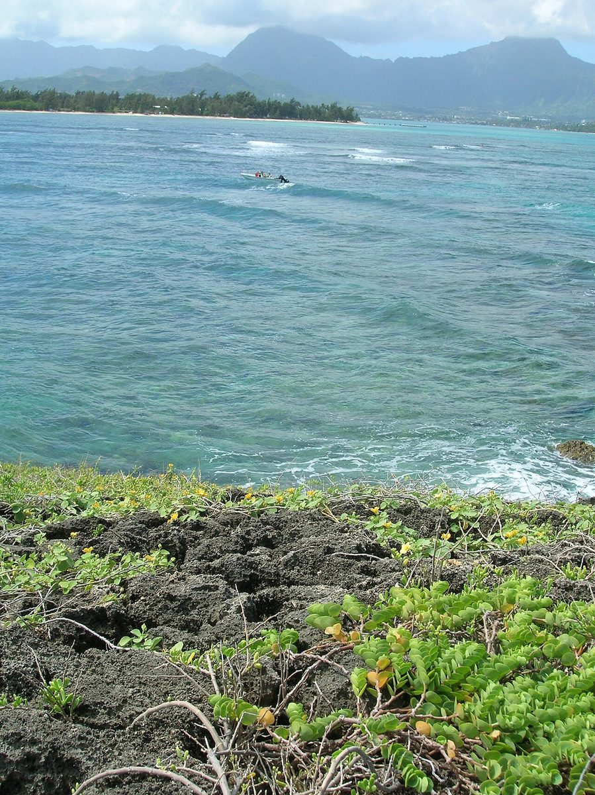
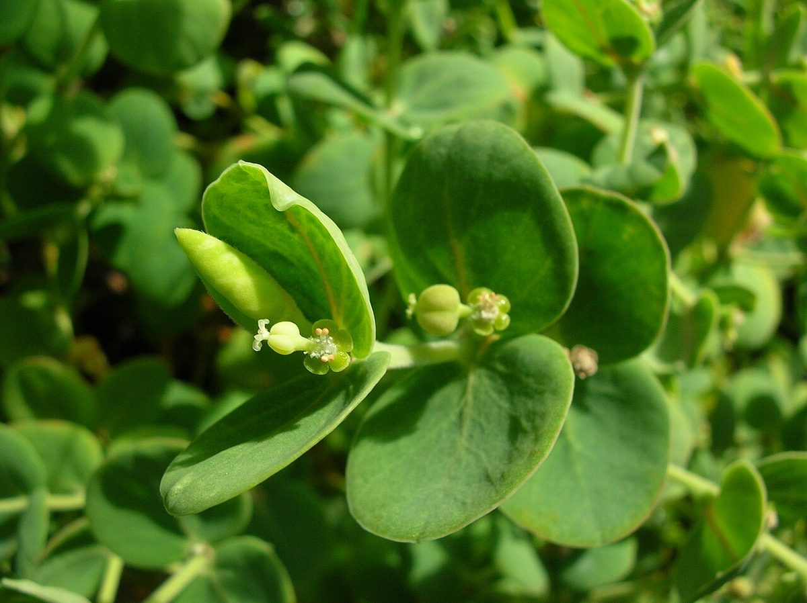

COMMON Beach strand Dune
Chamaesyce degeneri
ʻakoko · Degener's sandmat, coastal ʻakoko


Quick facts
| Family | Euphorbiaceae |
|---|---|
| Scientific name | Chamaesyce degeneri |
| Hawaiian name(s) | ʻakoko |
| English name(s) | Degener's sandmat, coastal ʻakoko |
| Status | Endemic |
| Conservation | — |
| Coastal zones | Beach strand Dune |
| Occurrence | Hawaiian endemic prostrate ʻakoko of low coastal ground. Records include coastal Kauaʻi; on the roadless coast, likely on exposed calcareous or basaltic pans and stabilized dune surfaces. Kauaʻi has additional coastal ʻakoko species (e.g., *C. celastroides* varieties), so genus-level identification is often more reliable in the field than species-level. |
Hazards: Milky latex is irritating to skin and especially to eyes — do not touch eyes after handling any Chamaesyce or Euphorbia in the field.
How to identify
- Growth form
- A prostrate perennial herb forming low mats, all vegetative parts exuding a milky white latex when broken (Euphorbiaceae signature).
- Size
- Prostrate mats to 30–60 cm across; only a few cm tall.
- Leaves
- Opposite, small (0.5–1.5 cm), oblong-elliptic, thin, with entire to slightly toothed margins and a distinctly asymmetric base — another Chamaesyce genus signature.
- Flowers
- Not true flowers but cyathia — the tiny cup-shaped Euphorbiaceae reproductive structure, ~1–2 mm across, holding a cluster of stamens and a single pistil. Cyathia sit in leaf axils; look for glandular appendages around the rim.
- Fruit / seed
- A small (~2 mm) three-lobed capsule that splits explosively at maturity.
- Bark / stem
- Slender green to reddish trailing stems, thin, breaking easily.
- Where it sits on the coast
- Open dry ground on strand, low dune, coral rubble pans; often on hot exposed micro-sites where competition is low.
Clinchers (features that lock the ID)
- Milky white latex from any broken stem or leaf — genus signature (be careful — see hazards).
- Opposite small leaves with an asymmetric base and often slightly toothed margin.
- Prostrate low-mat habit on exposed dry coastal ground.
- Cyathia (tiny cup-shaped flower structures) with rim glands — hand lens confirms.
Look-alikes
- Chamaesyce celastroides (and varieties, including var. stokesii on Kauaʻi) — Another Hawaiian endemic coastal ʻakoko. In the field these Chamaesyce are often not separable without close inspection of the cyathial appendages and habit. Note the plant as "coastal ʻakoko / Chamaesyce sp." and consult Wagner et al. [16] and Herbst & Wagner [20] for identification.
- Euphorbia peplus, E. maculata, other introduced spurges — Introduced spurges tend to be smaller-leaved weedy annuals of disturbed lawns and gardens, without the specifically coastal habitat. Latex is shared across the family — habitat context is the discriminator.
- Boerhavia repens (alena) — Boerhavia also has prostrate opposite-leaved habit but exudes no milky sap when broken. Break a stem — latex present = Chamaesyce, latex absent = not Chamaesyce.
Ecology
Pioneer of hot exposed coastal substrates. The milky latex deters some herbivores. Cyathia are pollinated by small flies and native bees. [16], [20], [21], [22], [23]
Cultural significance
ʻAkoko names the Hawaiian coastal spurges collectively; the shared Hawaiian name recognizes the group's milky latex and prostrate form. Framed respectfully.